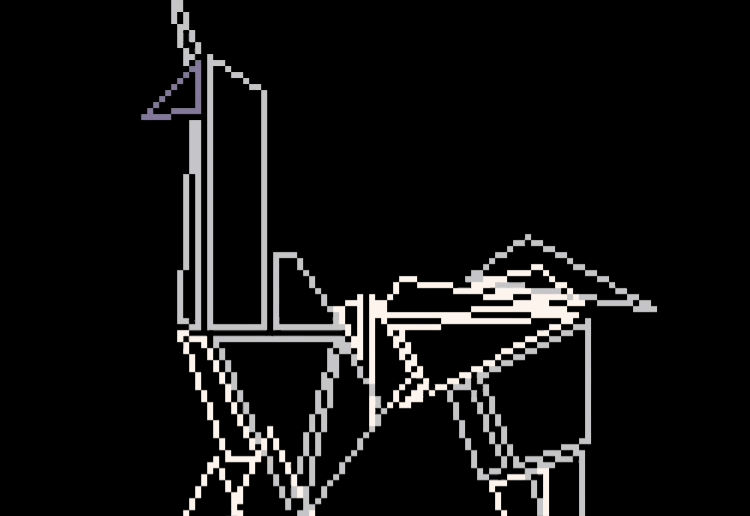
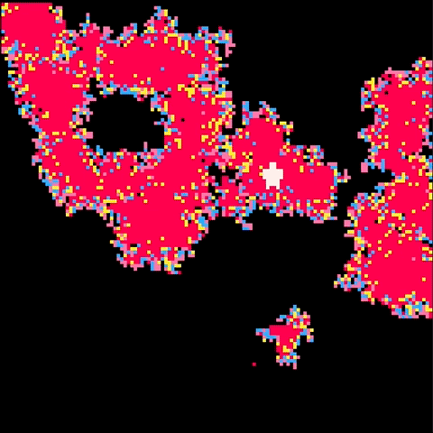
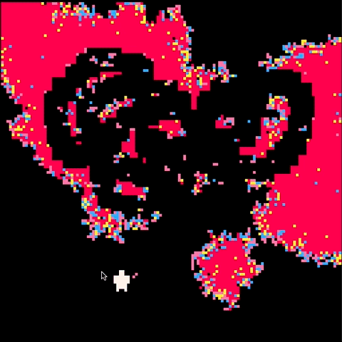
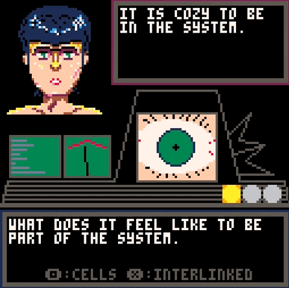
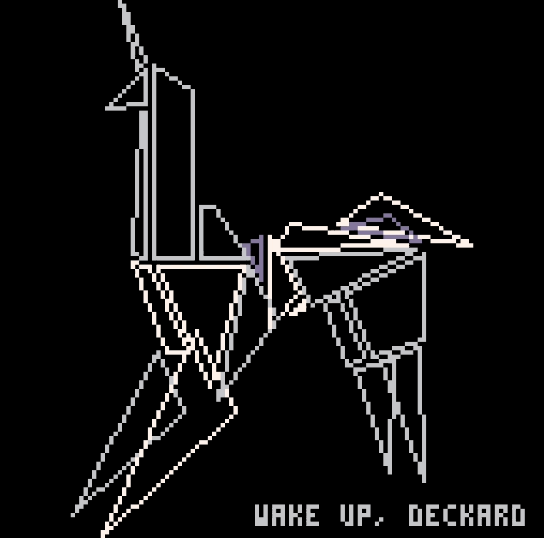
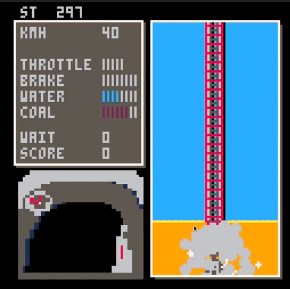
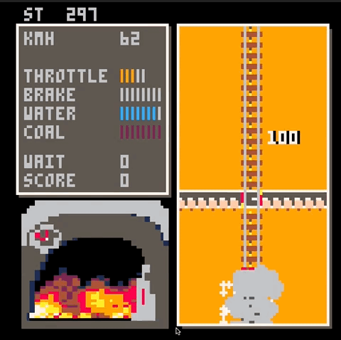

Experimental Pico 8 Prototypes
Pico 8 - 12 Prototypes in 4 months
PICO-8 is a virtual machine and game engine that emulates the 8-bit systems of the 1980s. I was introduced to PICO-8 in the "Pixel Prototype" class, taught by Gabe Cuzzillo, the creator of Ape Out.

Cell Cell Cell
Inspired by cellular automata, serving as a metaphor for conflict between humanity and nature, illustrating how solutions create new problems.

Play
VK Test
Inspired by the Voight-Kampff Test from "Blade Runner". Players assume Deckard's role determining if Rachel is a replicant through metaphorical questions affecting replicant fate.

Play
Elysium
Cellular automata-inspired landscape generator allowing players to add, vary, or randomize pixels to craft unique landscapes.
 Play
Play

Steam Train Simulator
Players operate a solitary steam train, managing throttle, brakes, water filling, and coal loading to halt the train at the station.

Play